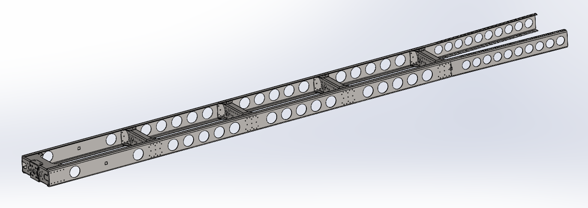
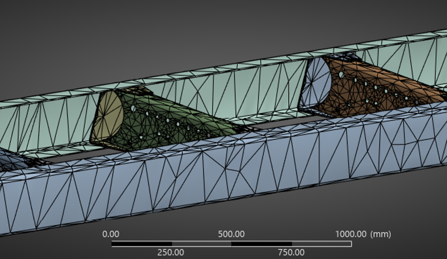
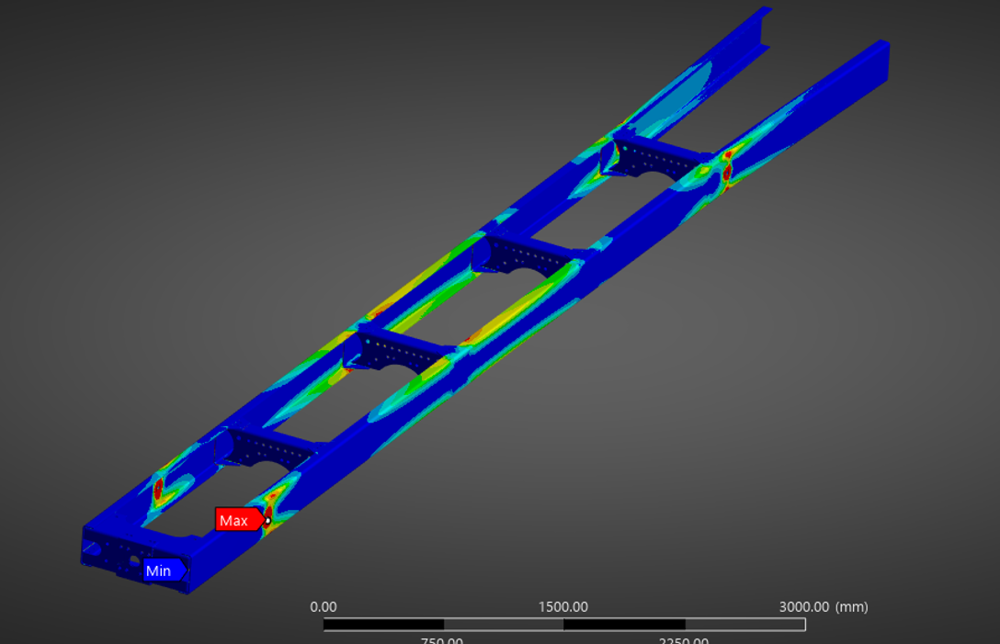
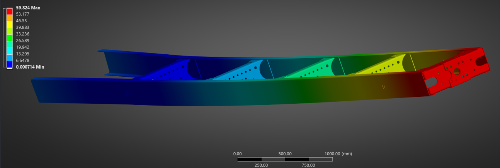
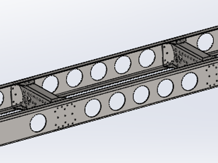

FEA Analysis and Redesign of Car Chassis
Overview
This project involved analyzing the structural performance of a truck chassis using Finite Element Methods (FEM) in ANSYS. The goal was to evaluate global and local stress, bending stiffness, and torsional stiffness while simulating a total vehicle mass of 10,000 kg with a specific center of gravity. Following the baseline analysis, the chassis was successfully redesigned to reduce its mass by over 15% without significant loss of structural integrity.
Key Analysis & Design Highlights
- Model Simplification: Replaced complex fastener holes with bonded contacts and idealized suspension mounts using square split patches to ensure high-quality meshing and reduce stress singularities.
- Center of Gravity Adjustment: Implemented a remote point mass of 9,463.75 kg to accurately shift the chassis COG to the required (4.5m, 0m, 0.4m) XYZ coordinates.
- Mesh Independence Studies: Conducted 10 levels of progressive refinement (down to 10mm global and 7.5mm local sizing) to ensure convergence of global stress (~51 MPa), bending stiffness (~90 kN/m), and torsional stiffness (~490 N-m/deg).
- Strategic Weight Reduction: Cross-referenced stress contour plots to identify regions of consistently low stress. Removed material via circular extrusions along the C-beams, cross-members, and towing jaw to avoid high-stress concentrations.
Technical Specifications & Results
| Material | Structural Steel (E = 210 GPa, ν = 0.3, ρ = 7850 kg/m³) |
|---|---|
| Target Mass | 10,000 kg (using Remote Point Mass) |
| Original Chassis Mass | 540.99 kg |
| Redesigned Chassis Mass | 467 kg (15.8% Reduction) |
| Bending Stiffness (Original vs Redesign) | 89.6 kN/m → 82.5 kN/m (8% decrease) |
| Torsional Stiffness (Original vs Redesign) | 463.8 N-m/deg → 436.4 N-m/deg (6% decrease) |
| Factor of Safety | 4.81 (Maximum stress well below yield strength) |
| Software Used | SolidWorks (CAD), ANSYS (FEA) |
Gallery



